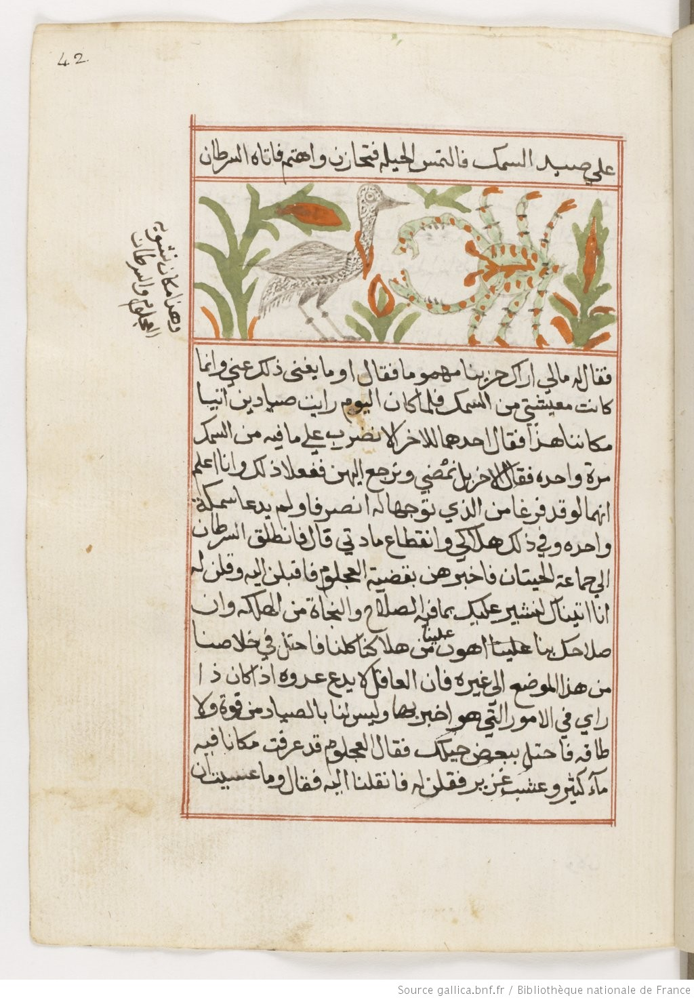
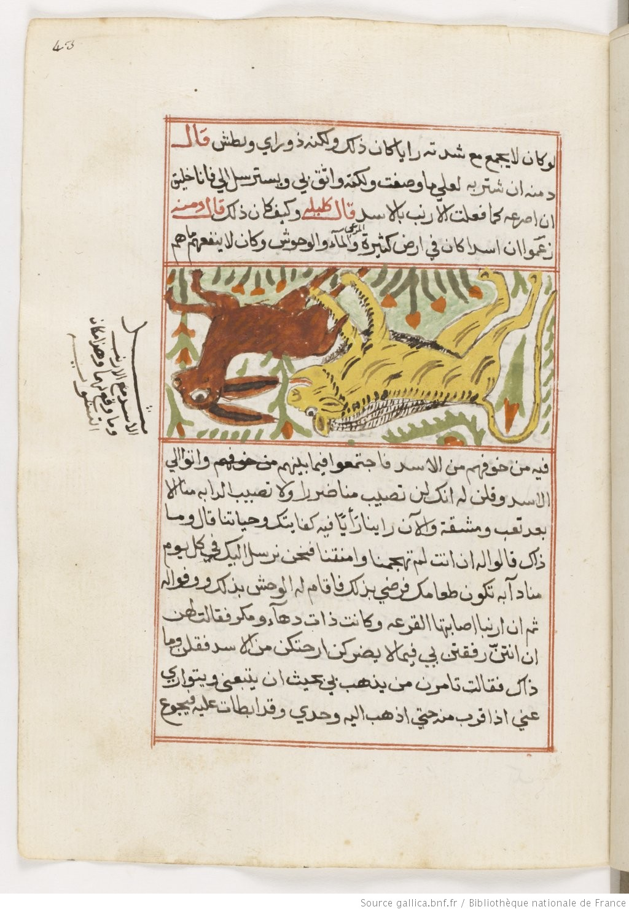
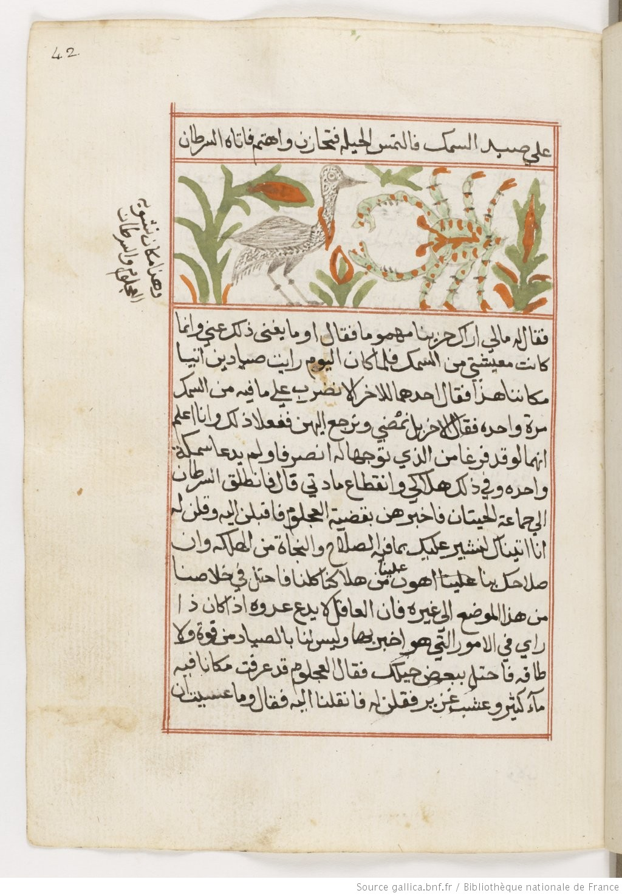
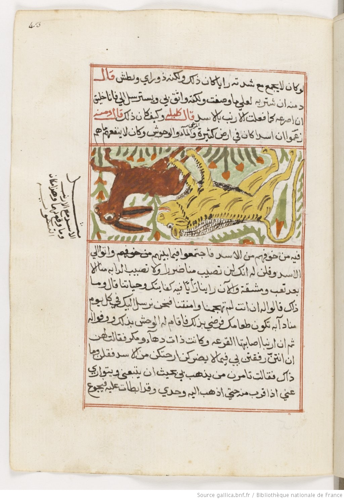

Kalila and Dimna
Personified Lessons for Princes
BnF
BN Arab 3472, Folios 41v, 42r & 43r
Anton Hsu
November 8th, 2016
A Multimedia Project for
ARTH 370 - Art & Literature of the Islamic World
Dr. Hussein Keshani
Art History & Visual Culture | UBC Okanagan campus
 


